Simulation context definitions
Introductory overview of the different simulation contexts - Real-time (VHIL) and TyphoonSim. Core library component and feature availability and visibility for each of these contexts are explained in detail.
Real-time/VHIL context visual indicators in Schematic Editor
To enhance user experience and provide greater insight into all available components and features in the real-time/VHIL simulation context, Typhoon HIL Schematic Editor displays all components and features without restrictions. However, if there are any usage constraints for specific components and features, the software will display a visual notification. In Library Explorer, all components available in the real-time/VHIL simulation context are visible, regardless of whether hardware/toolbox requirements are satisfed or not. Also, all component properties available in the real-time/VHIL simulation context are visible, independent of whether the requirements are met. In short, the full range of performances and possibilities that can be achieved by using Typhoon HIL Control Center for real-time/VHIL simulations are directly visible by default. Icons and a corresponding tooltip indicating that a component/property is not available in real-time/Virtual HIL due to a missing requirement(s) are displayed if a specific requirement is not satisfied.
The following examples describe real-time/VHIL simulation context visibility of the components in Library Explorer and properties on the component's mask when requirement(s) are not satisfied.
- Visibility of the component with unsatisfied real-time/VHIL context requirement(s) in Library Explorer
As a component with a specific real-time/VHIL context requirement example, we will use the 3 ph PMSM JMAG component. In this specific case, the 3 ph PMSM JMAG component is available in real-time/Virtual HIL simulation if the specific hardware requirement - Device configuration with nonlinear machine support is satisfied. Besides of the specific hardware requirement, the Nonlinear Machines toolbox should be available. In this example, the user has the Nonlinear Machines toolbox available through the user license.
This specific real-time hardware requirement is satisfied only if a HIL device configuration with support for nonlinear machines is chosen in the observed model Hardware settings (in Model settings). For example, a HIL404 device, configuration 4, does not have nonlinear machines support, while a HIL404 device configuration 1, has. If the chosen HIL404 device configuration is 1, the nonlinear machines real-time/VHIL requirement is satisfied, so the 3 ph PMSM JMAG component will be available fully in real-time/VHIL simulation. If the chosen HIL404 device configuration is 4, the 3 ph PMSM JMAG component is unavailable due to missing requirements, so in Library Explorer the following icon and tooltip will be displayed:
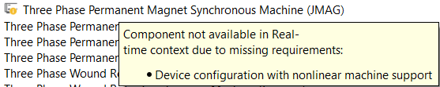
- Visibility of the property with unsatisfied real-time/VHIL context requirement
As a component's property with a specific real-time/VHIL context requirement example, we will use Losses calculation property of the Three Phase Inverter component.
The Three Phase Inverter component Losses calculation property is available in the real-time/Virtual HIL simulation if the Power Loss Calculation toolbox requirement is satisfied. Besides of the toolbox requirement, a device configuration with converter power loss calculation should be chosen. In this example, the user has the Power Loss Calculation toolbox available through the user license.
If the chosen HIL device configuration does not support converter power loss calculation (e.g. HIL402, configuration 1), the Three Phase Inverter component Losses calculation property is unavailable in real-time/VHIL due to missing requirements, so in the component’s mask, the property tooltip shown in Figure 3 will be displayed:
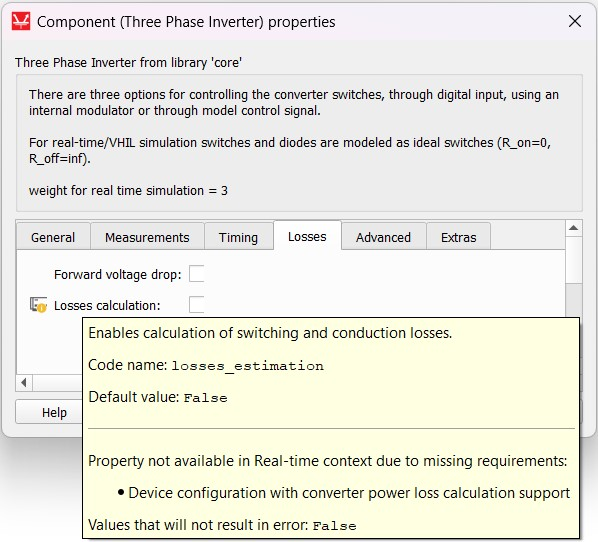
General description and motivation for different simulation contexts introduction
The Typhoon HIL toolchain supports model simulation in two different ways: HIL/VHIL (real-time simulation context) and TyphoonSim (offline simulation context).
Due to the nature of real-time simulation and offline simulation, not all components and features can be available in both contexts at all times. The simulation perspectives concept lets you distinguish which components are supported and which components are not supported in a particular simulation context.
When a component is ignored or not supported in a specific context, a visual overlay for components/properties is displayed (see Icons indicating component/property availability). Additionally, ignored or not supported conditions are checked during the automatic model validation process after the simulation/compilation button is clicked. The simulation perspective chooser helps you show/hide notifications for a specific context.
- Real-time perspective – only components/properties/descriptions/constraints for real-time/Virtual HIL simulation will be visible, while TyphoonSim related information will not be shown.
- TyphoonSim perspective - only components/properties/descriptions/constraints for TyphoonSim simulation will be visible, while real-time/Virtual HIL related information will not be shown.
- Integrated perspective – all components/properties/descriptions/constraints for both real-time/Virtual HIL and TyphoonSim simulation will be visible.
Available perspectives can be chosen in the right top corner in Typhoon HIL Control Center Schematic Editor:
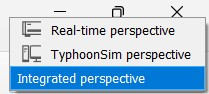
The following sections of this document provide a more detailed explanation about both context definitions and their uses.
If the Integrated perspective is chosen, constraints regarding component availability in either the real-time/VHIL or TyphoonSim context will be visible in Library Explorer where corresponding icons will be displayed (see Icons indicating component/property availability).
If either the Real-time or TyphoonSim perspective is chosen instead, available components for the corresponding context will be filtered in Library Explorer. This will also limit the visible component properties to only those that are supported in the chosen context.
If the Integrated perspective is chosen, all properties will be visible, and corresponding icons indicating their availability in the corresponding context will be displayed.
Model visualization gives you a visual overview of component availability in the chosen simulation context. Colors indicate which components on the schematic are supported, ignored, or not supported. For more details about this feature, please see Model visualization - Component level.
Also, in the Model information window, unsupported components and required toolboxes for the Real-time or TyphoonSim simulation contexts will be listed. For more details, please see Model information (F10) - Component level.
As an example, let’s observe the EtherCAT Slave component, which is not supported in TyphoonSim:
The fact that the EtherCAT Slave component is not supported in TyphoonSim is clearly indicated through the red TyphoonSim icon and tooltip in Library Explorer (Figure 5), in Model visualization where the component will be marked as red if Visualize model by/Requirements using color – TyphoonSim is performed (Figure 6, and in Model information, where the EtherCAT Slave component will be listed under Unsupported components in TyphoonSim (Figure 7).
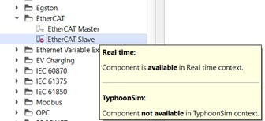
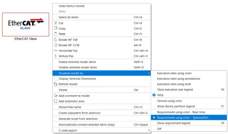
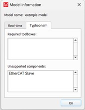
Different simulation context definitions
For each simulation context (TyphoonSim/Real-time), there are 3 types of component/property availability:
- unsupported - component/property is not available/supported in the corresponding context
- ignored - component/property will be ignored in the corresponding context
- requirement – component/property is available/supported in the corresponding context, but the specified context (real-time/TyphoonSim) requirement should be satisfied
If a component/property is available in the corresponding simulation context and none of the requirements need to be met, it will not be specifically emphasized that the component/property is fully supported.
The main difference between unsupported and ignored components/properties in a corresponding simulation context is that the “ignored” component/property will not completely crash real-time/Virtual HIL or TyphoonSim simulation and it will not cause any compilation errors (in the context where it is marked as “ignored”). On the other hand, an unsupported component/property will break the simulation if present in a model scheme context where it is marked as “nonsupported”.
For example, if a component/property is available in real-time and ignored in TyphoonSim, no changes in the model are required to run the same real-time model in TyphoonSim (there is no need to delete or disable “ignored” components or to change the “ignored” property value in TyphoonSim). So, in that case, you will be able to run the simulation without any issue. On the other hand, when a component is available in real-time and not supported in TyphoonSim, it should be removed, disabled, or bypassed from the model before running it in TyphoonSim.
Icons indicating component/property availability
In Integrated perspective, where all components/properties/descriptions available in both real-time/Virtual HIL and TyphoonSim simulation will be visible, the icons in Table 1 are used to distinguish component availability in Library Explorer and properties availability of the supported components in their corresponding real-time/TyphoonSim context.
| Icon | Description |
|---|---|
| Icon indicating that component/property is not available in TyphoonSim | |
| Icon indicating that component/property is not available in real-time/Virtual HIL simulation | |
| Icon indicating that component/property is ignored in TyphoonSim | |
| Icon indicating that component/property is ignored in real-time/Virtual HIL simulation | |
| Icon indicating that component/property is not available in TyphoonSim due to missing requirements | |
| Icon indicating that component/property is not available in real-time/Virtual HIL due to missing requirements |
Component level simulation context definitions
In this section, component visibility in Library Explorer in all of the available perspectives (Real-time, TyphoonSim, and Integrated perspectives) is described.
- Integrated perspective – unsupported component:
As an unsupported component example, we will use the IEC 60870 Server component. In this specific case, the IEC 60870 Server component is not available in TyphoonSim, while it is available in real-time/Virtual HIL simulation, so in Library Explorer, the following component tooltip will be displayed:
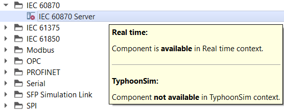
Also, the corresponding icon(s) indicating component availability in the TyphoonSim/real-time context will be displayed next to the observed component listed in Library Explorer. In this specific example, only the icon indicating an unsupported component in TyphoonSim will be displayed, while no icon for the real-time/Virtual HIL simulation will be visible, as the IEC 60870 Server component is available in real-time/Virtual HIL simulation.
- Integrated perspective – ignored component:
As an ignored component example, we will use the TyphoonSim/Scope component. In this specific case, the TyphoonSim/Scope component is ignored in real-time/Virtual HIL simulation, while it is available in TyphoonSim, so in Library Explorer the following component tooltip will be displayed:
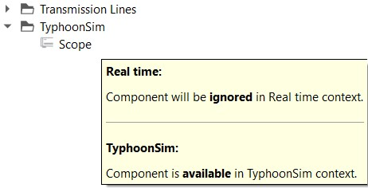
Also, the corresponding icon(s) indicating the component’s availability in the TyphoonSim/real-time context will be displayed next to the observed component listed in Library Explorer. In this specific example, only the icon indicating an ignored component in real-time will be displayed, while no icon for the TyphoonSim simulation will be visible, as the TyphoonSim/Scope component is available in TyphoonSim simulation.
- Integrated perspective – component with specific context requirement:
As a component with a specific context requirement example, we will use the 3 ph PMSM JMAG component. In this specific case, the 3 ph PMSM JMAG component is available in TyphoonSim, while it is available in real-time/Virtual HIL simulation if the specific hardware requirement - Device configuration with nonlinear machine support is satisfied. Besides of the specific hardware requirement, the Nonlinear Machines toolbox should be available. In this example, the user has the Nonlinear Machines toolbox available through the user license.
This specific real-time hardware requirement is satisfied only if a HIL device configuration with support for nonlinear machines is chosen in the observed model Hardware settings (in Model settings). For example, a HIL404 device, configuration 4, does not have nonlinear machines support, while a HIL404 device configuration 1, has. If the chosen HIL404 device configuration is 4, the 3 ph PMSM JMAG component is unavailable due to missing requirements, so in Library Explorer the following icon and tooltip will be displayed:
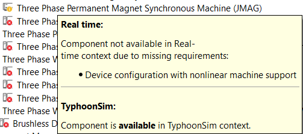
If the chosen HIL404 device configuration is 1, the nonlinear machines real-time/VHIL requirement is satisfied, so the 3 ph PMSM JMAG component will be available fully in real-time/VHIL simulation.
Also, the corresponding icon indicating the component’s availability in the real-time context will be displayed next to the observed component listed in Library Explorer. In this specific example, if we observe the case when HIL404 device, configuration 4 is chosen, the icon indicating a missing real-time requirement will be displayed. However, if HIL404 device, configuration 1 is chosen, the 3 ph PMSM JMAG component is available in the real-time context, so no icon for the real-time context will be visible.
- Real-time perspective:
If a component is unsupported or ignored in real-time/Virtual HIL simulation, it will not be present in Library Explorer if the Real-time perspective is chosen from the available perspectives. If a component is unsupported due to missing real-time requirement(s), it will be visible in Library Explorer with the corresponding tooltip and icon indicating that the component is not available in real-time due to missing requirements.
- TyphoonSim perspective:
If a component is unsupported or ignored in TyphoonSim, it will not be present in Library Explorer if the TyphoonSim perspective is chosen under the available perspectives. If a component is unsupported due to missing TyphoonSim requirement(s), it will be visible in Library Explorer with the corresponding tooltip and icon indicating that the component is not available in TyphoonSim due to missing requirements.
Model visualization - Component level
Model visualization by requirements in a corresponding simulation context (real-time or TyphoonSim) is very useful when we want to distinguish which components are available and which components are not available/supported in a corresponding simulation context in our model. Model visualization can be done in the following way:
- Right mouse click anywhere on the schematic canvas;
- Visualize model by/Requirements using color –> Real-time or Requirements using color –> TyphoonSim.
If a component is supported in the corresponding context, it will be marked as green. If a component is not supported in the corresponding context, or some of the requirements for the selected context (pay attention to the chosen HIL device configuration in the real-time context) are not satisfied, it will be marked as red. If a component is ignored in the corresponding context, it will be marked as gray. By pressing F9, Requirements Legend will be displayed. Model visualization can be done regardless of the selected perspective.
Model information (F10) - Component level
The Model information window displays simulation-perspective-dependent information on which model components are unsupported and which toolboxes are required in order to run a real-time/TyphoonSim simulation. If the chosen perspective is Integrated perspective, model components availability in both (Real-time and Typhoonsim) perspectives will be visible in the Model information window. Otherwise, if the chosen perspective is Real-time perspective/TyphoonSim perspective, only model components availability for the corresponding (chosen) perspective will be visible in the Model information window.
- Example 1: Model information - 3 ph PMSM JMAG component in “Integrated perspective”:
The 3 ph PMSM JMAG component is available in TyphoonSim perspective, but for real-time/Virtual HIL simulation, the Nonlinear Machines toolbox requirement should be satisfied. Besides the toolbox requirement, a device configuration with nonlinear machines support should be chosen. In this example, the user has the Nonlinear Machines toolbox available through their user license.
If the chosen HIL device configuration does not support Nonlinear Machines (e.g. HIL402, configuration 1), the 3 ph PMSM JMAG component will be listed under “Unsupported components” and the Nonlinear Machines toolbox will be listed under the “Required toolboxes” in the real-time perspective of the Model information window, as shown in Figure 11.
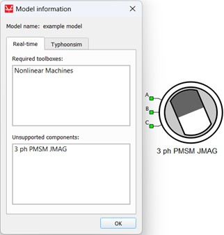
On the other hand, if the chosen HIL device configuration does support Nonlinear Machines (e.g. HIL402, configuration 6), the 3 ph PMSM JMAG component is supported and only the Nonlinear Machines toolbox will be listed under the “Required toolboxes” in the real-time perspective of the Model information window, as shown in Figure 12.
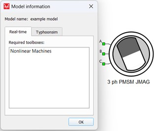
The TyphoonSim perspective window in Model information will be empty because the 3 ph PMSM JMAG component is available in TyphoonSim and no toolboxes are required, as shown in Figure 13.
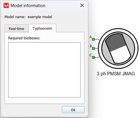
- Example 2: Model information - 3 ph Cylindrical Rotor PMSM component in “Integrated perspective”:
The 3 ph Cylindrical Rotor PMSM component is unsupported in TyphoonSim, while it is fully available in the real-time/Virtual HIL simulation (no required toolboxes or any other requirements).
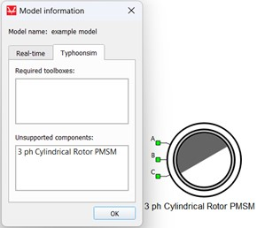
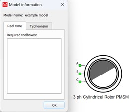
Property level simulation context definitions
In this section, property visibility in the supported component mask in all of the available perspectives (Real-time, TyphoonSim, and Integrated perspectives) is described.
- Integrated perspective – unsupported property:
As an unsupported property example, we will use the 3 ph PMSM component Dynamic flux property. In this specific case, the Dynamic flux property is not available in TyphoonSim, while it is available in real-time/Virtual HIL simulation, so in the component’s mask, the property tooltip shown in Figure 16 will be displayed.
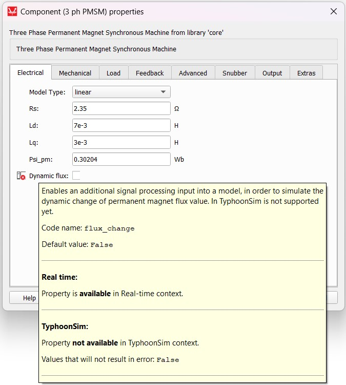
Also, the corresponding icon(s) indicating property availability in the TyphoonSim/real-time context will be displayed next to the observed property on the component mask. In this specific example, only the icon indicating an unsupported property in TyphoonSim will be displayed, while no icon for the real-time/Virtual HIL simulation will be visible as the Dynamic flux property is available in real-time/Virtual HIL simulation.
- Integrated perspective – ignored property:
As an ignored property example, we will use the Active Full Wave Rectifier PESB Optimization property. In this specific case, the PESB Optimization property is supported in real-time/Virtual HIL simulation, while it is ignored in TyphoonSim.
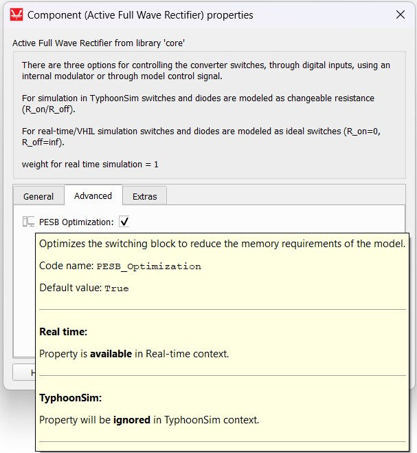
Also, the corresponding icon(s) indicating property availability in the TyphoonSim/real-time context will be displayed next to the observed property on the component mask. In this specific example, only the icon indicating an ignored property in TyphoonSim will be displayed, while no icon for the real-time/Virtual HIL simulation will be visible as the PESB Optimization property is available in real-time/Virtual HIL simulation.
- Integrated perspective – property with specific context requirement:
As a property with a specific context requirement example, we will use the 3 ph WRSYNC component if vector property. The if vector property is available only if the chosen machine Model type property is set to “nonlinear” and the Mag. Curve Type property is set to “no load curve”. In this specific case, the if vector property is available in TyphoonSim, while it is available in real-time/Virtual HIL simulation only if this specific requirement is satisfied.
The 3 ph WRSYNC component if vector property is available in the TyphoonSim perspective, but for the real-time/Virtual HIL simulation, the Nonlinear Machines toolbox requirement should be satisfied. Besides of the toolbox requirement, a device configuration with nonlinear machines support should be chosen. In this example, the user has the Nonlinear Machines toolbox available through the user license.
If the chosen HIL device configuration does not support Nonlinear Machines (e.g. HIL402, configuration 1), the 3 ph WRSYNC component if vector property is unavailable in real-time due to missing requirements, so in the component’s mask, the property tooltip shown in Figure 18 will be displayed:
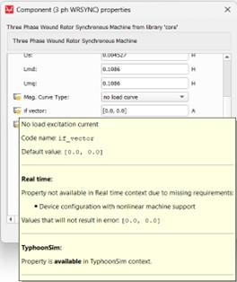
If the HIL device configuration does support Nonlinear Machines (e.g. HIL402, configuration 6), requirements are satisfied, so the 3 ph WRSYNC component if vector property is available in real-time. In this case in the component’s mask, the property tooltip shown in Figure 19 will be displayed:
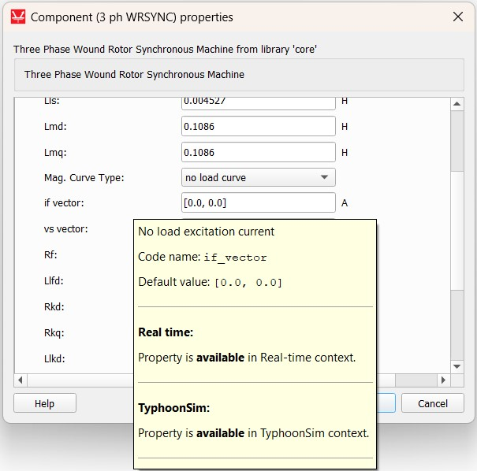
Also, the corresponding icon(s) indicating property availability in the TyphoonSim/real-time context will be displayed next to the observed property on the component mask. In this specific example, if the chosen HIL device configuration does not support Nonlinear Machines (e.g. HIL402, configuration 1), the icon indicating a missing real-time requirement will be displayed. However, if the HIL device configuration does support Nonlinear Machines (e.g. HIL402, configuration 6), the requirements are satisfied and the property is available in the real-time context, so no icon for the real-time context will be visible. This property is fully available in TyphoonSim, so no icon for the TyphoonSim context will be visible.
- Real-time perspective:
If a property is unsupported or ignored in real-time/Virtual HIL simulation, it will not be present on the component mask if Real-time perspective is chosen under the available perspectives. If a property is unsupported due to missing real-time requirement(s), it will be visible on the component mask with the corresponding tooltip and icon indicating that the property is not available in real-time due to missing requirements.
- TyphoonSim perspective:
If a property is unsupported or ignored in TyphoonSim simulation, it will not be present on the component mask if TyphoonSim perspective is chosen under the available perspectives. If a property is unsupported due to missing TyphoonSim requirement(s), it will be visible on the component mask with the corresponding tooltip and icon indicating that the property is not available in TyphoonSim due to missing requirements.
Model visualization and Model information (F10) - Property level
Unsupported properties values (fully unsupported or unsupported due to missing requirements) can affect component availability and visualization by requirements for the corresponding context. Supported/ignored properties, however, cannot.
If some property is not supported (fully unsupported or unsupported due to missing requirements), but a component is supported in the corresponding TyphoonSim/real-time context, the unsupported property value can affect the component's availability in the following manner:
- If an unsupported property value is different than the default value (in the case of a fully unsupported property),
the component will be treated as unsupported (marked as red when visualization is performed and listed in the Unsupported
components dialog in the Model information window) in the corresponding context where
the observed property is not available.
Example: Integrated perspective - 3 ph PMSM component is available, but the Dynamic flux property is not available in TyphoonSim. The default value for the Dynamic flux property is False (unchecked). If the Dynamic flux property is checked (the property value is different than the default property value), the 3 ph PMSM component will be marked as red when TyphoonSim visualization is performed and it will be listed in the TyphoonSim Unsupported components dialog in the Model information window (F10) with a tooltip explaining why the component is not supported in the corresponding simulation context, as shown in Figure 20.
Figure 20. TyphoonSim unsupported property in the Model information window in the Integrated perspective 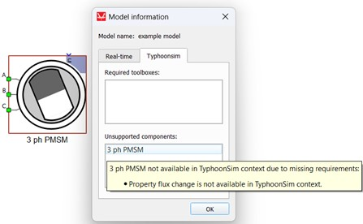
If an unsupported property value is different than the allowed property values, the component will be treated as unsupported (marked as red when visualization is performed and listed in the Unsupported components dialog in the Model information window) in the corresponding context where observed property value is not available.
Example: Integrated perspective - 3 ph PMSM component is available in TyphoonSim, but the Saturation property value “incremental inductance vs current” is not available in TyphoonSim. Other Saturation property values are supported in TyphoonSim. If the Saturation property value is set to “incremental inductance vs current”, the 3 ph PMSM component will be marked as red when TyphoonSim visualization is performed and listed in the TyphoonSim Unsupported components dialog in the Model information window (F10) with a tooltip explaining why the component is not supported in the corresponding simulation context, as shown in Figure 21.
Figure 21. TyphoonSim unsupported property value in the Model information window in the Integrated perspective 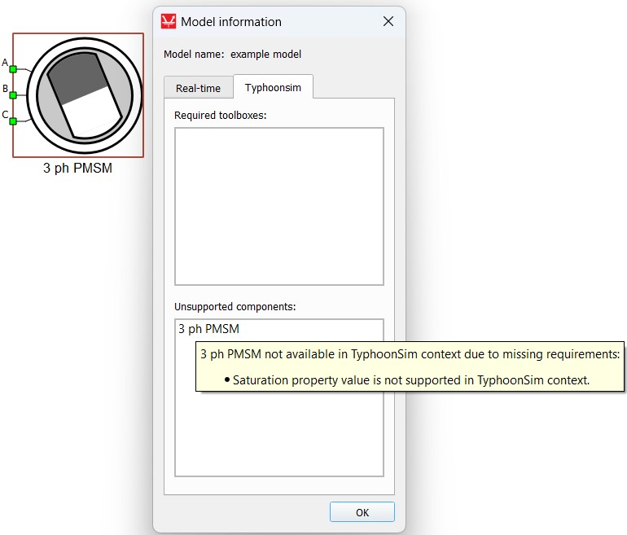
- If an unsupported property value is set to its default value (in the case of a fully unsupported property) or an allowed property value (in the case of unsupported property values), the component will be available and marked as green in the corresponding real-time/TyphoonSim context.